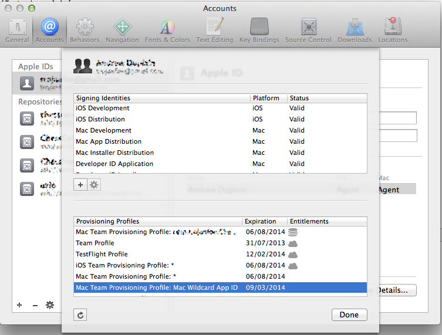
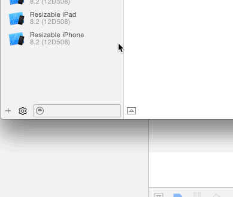

Provisioning Profiles menu item missing from Xcode 5
After spending a whole day installing a fresh copy of Mac OS X v10.8 (Mountain Lion), Xcode 5, fixing provisioning profiles, certificates, creating new ones, I finally managed to get my applications running on my iPad again. The problem is that in Xcode 5 I don't have a menu item for Library - Provisioning Profiles, and I don't know what could have happened. I restarted the computer, tried some things, but I really have no idea what I could do. How can I fix this problem?

Answer
These settings have now moved to Preferences > Accounts:

Suggest
If you like to manually manage your profiles (mostly to clean up):
- Open Windows/Devices in Xcode 6
- Select your device
- Show Provisioning Profiles:
- 
- You'll get + and - buttons to add/remove profiles:

No longer supported ... you can also download Apple's iPhone Configuration Utility 3.5 for Mac OS X, it still has "Provisioning Profiles" and works with Xcode 5 -- it's now gone from Apples site but you can find an alternative download link in @suda's comment.